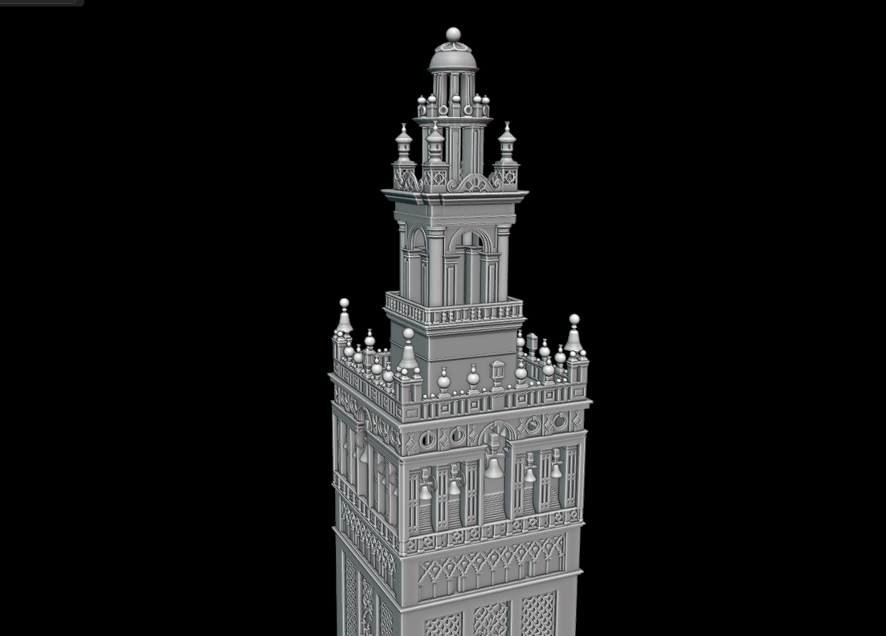
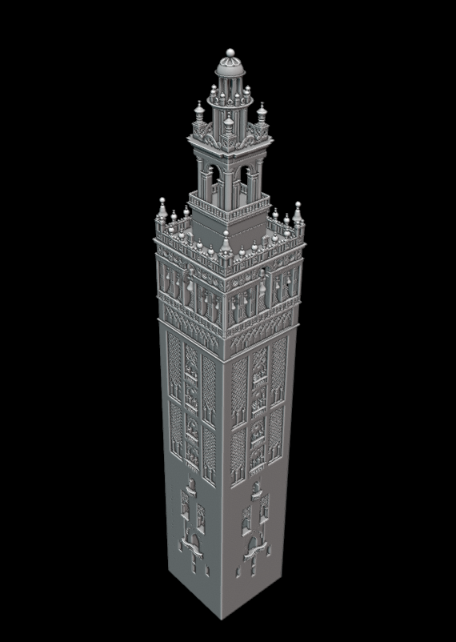
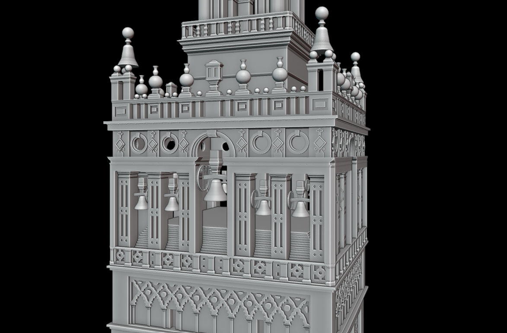
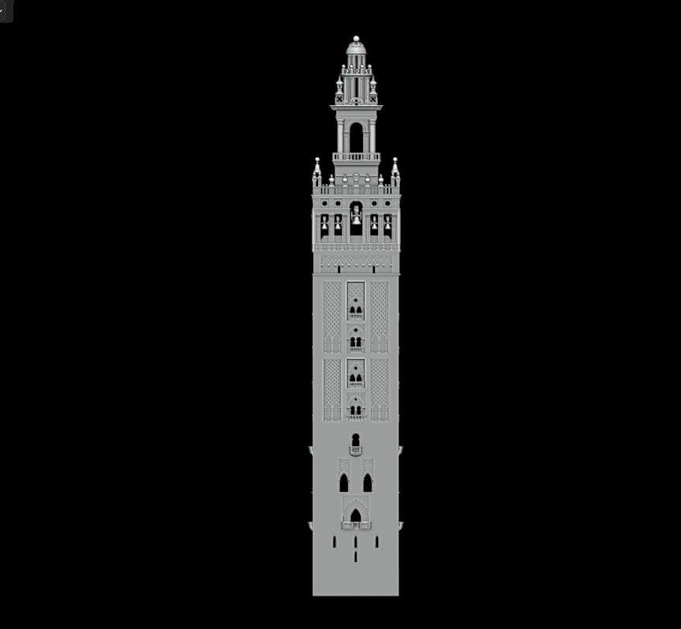

El Concepto
Como parte del desarrollo de entornos para Plague of the Inquisition, llevé a cabo el modelado 3D independiente de La Giralda. La meta era crear un punto de referencia visual (landmark) imponente que los jugadores pudieran identificar desde distintos puntos de la ciudad, respetando su estética del siglo XVI. Plague of the Inquisition. El objetivo fue recrear monumentos históricos de la Sevilla del siglo XVI, logrando una representación arquitectónica fiel y optimizada para su integración directa en el motor gráfico.
Mi Rol y Retos
Realicé el modelado íntegro en Blender. El principal reto fue el nivel de detalle de las fachadas y los balcones; tuve que encontrar el equilibrio perfecto entre un acabado de alta calidad visual para primeros planos y una malla limpia de bajos polígonos (Low Poly) para no afectar el framerate del juego general.
Galería de Renders
Haz clic en las imágenes para ampliar los detalles del modelado:


